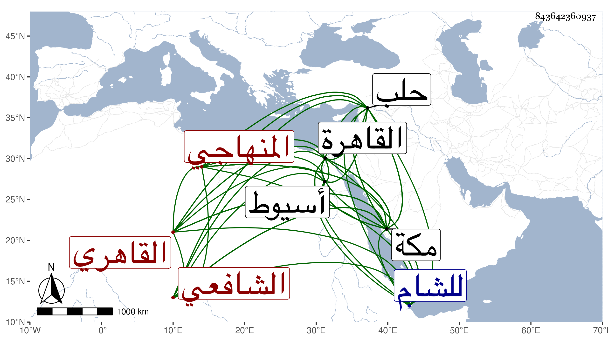

0902Sakhawi.DawLamic.ITO20230111-ara1.EIS1600.843642360937
Biography ID: 843642360937
23
محمد بن أحمد بن علي بن عبد الخالق الشمس الاسيوطي ثم القاهري الشافعي المنهاجي . ولد كما قال لي في جمادى الآخرة سنة ثلاث عشرة وثمانمائة وقيل سنة عشر بأسيوط ، ونشأ بها فحفظ القرآن عند سعد الدين الواحى وغيره والعمدة وأربعى النووى الشاطبية والمنهاج الفرعي والأصلي وسطور الأعلام في معرفة الإيمان والإسلام للحمصي فيما زعمه وأنه عرض على الجلال البلقيني والولي العراقي والبيجوري والشرف الأقفهسي والتفهني وقاري الهداية والبساطي وابن مغلى في آخرين منهم النجم بن عبد الوارث والحمصي وأنه تلا لأبي عمرو على الشمي البوصيري ، وقرأ في الفقه على الزكي الميدومي والشمس بن عبد الرحيم والبدر ابن الخلال وعن الزكي أخذ النحو أيضا وعن الشهاب السخاوي القادم عليهم أسيوط مجموع الكلائى والملحة وقيل بل الشهاب العجيمي وهو الذي سمعته منه والحديث عن شيخنا والتقي بن عبد الباري الكفيف وغيرهما ، وتكسب بالشهادة وتعاني الأدب وتميز فيه وامتدح شيخنا بقصيدة دالية سمعتها منه في مكة والقاهرة وكتبتها أوجلها في الجواهر وكذا كتبها عنه البقاعي منها :
| ياكعبة قبل الوقوف دخلتها | من باب شيبة حمدك المتأكد |
وجمع في الشروط كتابا سماه جواهر العقود ومعين القضاة والشهود في مجلد ضخم وأذن له شيخنا في العقود ، وصحب الأمير جانم قريب الأشرف برسباي فاختص به وسافر معه لحلب ثم للشام وكتب عنه الفضلاء من نظمه ونثره وجمع مجاميع في الأدب والتاريخ ولكنه يرمي بالمجازفة ولا يحمد في شهاداته وقد أهين بسببها في مكة وغيرها ، ولما كان مجاورا بمكة قرض للتقي بن فهد كتابه نهاية التقريب وقرأ بها البخاري مرة بعد أخرى ثم لقيه حفيده العز بحلب بعد دهر وكتب عنه من نظمه قصائد ، ولقيني بمكة ثم بالقاهرة .
